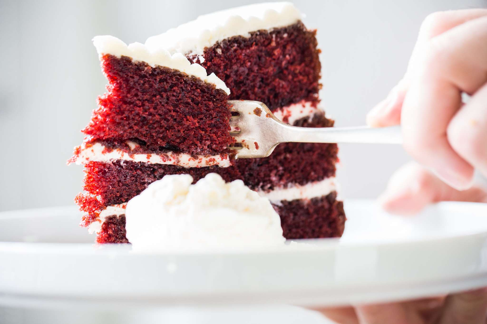

The Best Red Velvet Cake with Cream Cheese Frosting Recipe

Red Velvet Cake with Cream Cheese Frosting
Crushing it on any special occasion, red velvet is the homecoming queen of American confections. The origins of red velvet cake are tricky to trace, but its appeal is undeniable. This version of red velvet cake will bring you a moist and springy version of the scarlet-hued southern institution, with a tangy cream cheese frosting leaving you to call it the best cake you've ever had.
Tools
Ingredients
- Nonstick spray, as needed
- 420g Cake Flour (bleached), plus more for dusting
- 820g Sugar, granulated, divided
- 30g Cocoa powder, dutch-processed or natural
- 25g Salt, divided
- 15g Baking soda
- 3g Red powdered food coloring
- 2g Tartaric acid
- 11g Glycerol monostearate, optional
- 340g Canola oil
- 340g Buttermilk
- 150g Egg(s), about 3 Large
- 17.5g Vanilla extract, divided
- 440g Water, divided
- 50g Vodka
- 900g Powdered sugar
- 225g Cream Cheese
- 225g Butter
- 45g Milk
Cooking Directions
- Preheat oven to 300°F - Place racks toward center of the oven.
- Prepare three springform pans - Grease three 9-inch springform or round cake pans, and line the bottoms with parchment paper. Dust the sides with flour, and tap out excess flour.
- Prepare the dry mix - Whisk sugar, flour, cocoa, salt, baking soda and powder, food coloring, tartaric acid, and glycerol monostearate together in a large mixing bowl, then sift them into another bowl.
- Prepare the wet mix - Combine canola oil, buttermilk, eggs, and vanilla extract in the bowl of a stand mixer fitted with the paddle attachment, and mix on low speed until you get a homogenous liquid.
- Combine the wet and dry mixes - With the stand mixer on low, add the dty ingredients to the wet, one large spoonful at a time. Mix only until ingredients are just combined. (Overmixing results in a tougher cake that doesn't rise properly.)
- Boil water; slowly add to batter - Bring the water to a boil. To prevent evaporation, take it off the heat as soon as it starts to boil. With the mixer running on low, add water in a slow stream. Pouring slowly will increase the temperature of the battery gradually so the eggs won't cook. The final texture will be like thin brownie batter.
- Fill cake pans - Use a scale to pour 600 g of batter into each of the three springform pans. (There will be extra batter left over, perfect for cupcakes!)
- Bake the cake - Set a sheet pan on a lower rack in the oven to catch any batter that drips during baking. Bake the cakes on the center rack of the preheated oven until they reach a core temperature of 205°F, about 40 minutes. Don't move the cakes around while they're baking, or they'll collapse.
- Make syrup - While the cakes are baking, bring the sugar and water to a boil in a medium sauce pan over medium-high heat. Remove the pan from the heat, and aloow it to cool to room temperature. (You can use an ice bath to chill the whole pot very quickly, but you can let it sit and cool on the counter as well. Just don't add the vodka when the syrup is too hot, or you'll cook off some of the alcohol.)
- Remove cakes from the oven; slam on the counter - Remove springform pans from the oven. Slam each cake firmly on your countertop to pop any air bubbles. Allow cakes to cool completely on the counter or a wire rack before removing from pans.
- Remove cakes from pans; soak with syrup - Flip the cake layers over onto sheets of parchment paper. Remove the parchment circles stuck to the top of the layers. If there's a large dome or "crater rim" on a layer, you can shave it off with a long, serrated knife (or fill it out with extra frosting later). Brush each layer of cake with 75 g to 100 g of syrup. (The more you add, the moister your cake will be.)
- Make frosting - In the bowl of a stand mixer set to low, mix powdered sugar, cream cheese, butter, milk, salt, and vanilla extract. Gradually work up to high speed. Once the frosting reaches a consistent color, stop the mixer and use a sturdy spatula to scrape down the sides and bottom. Mix again on high speed. scrape down one more time, and give one final high-speed mix. The finished frosting will be quite stiff, with no lumps.
- Frost your cake - Scoop frosting into a piping bag fitted with a round tip. Starting from the middle, pipe frosting in a spiral on top of the bottom cake layer, then stack another cake layer on top. Pipe another spiral of frosting, top with final cake layer, and pipe the last spiral of frosting. You can leave the cake as is, or if you'd like, add frosting to the side and smooth out the cake with an icing comb.
- Let your cake rest (optional) - Technically, you can dig in right away. But if you can be patient, and let the cake sit and relax overnight, the cake will be even better!
